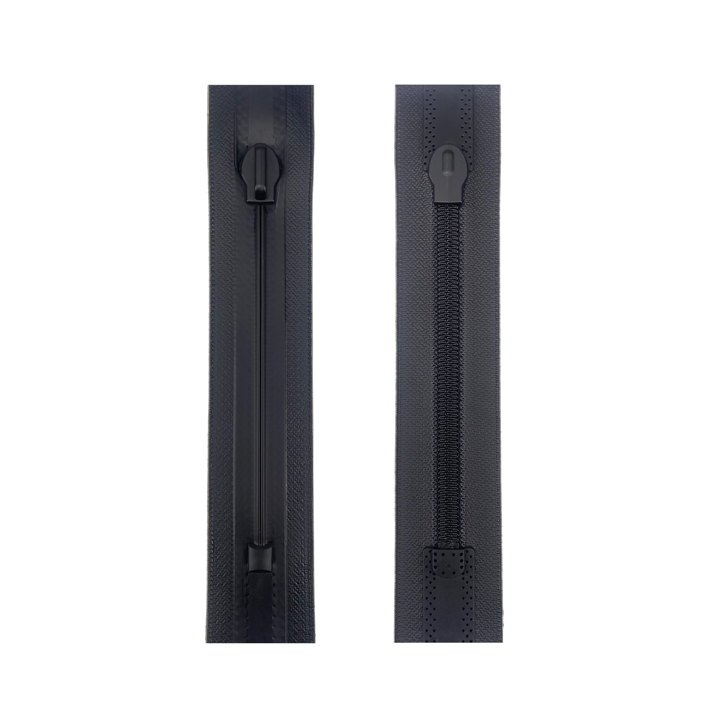

采用先进编织与密封技术，为您的户外装备提供深层防水保护

DFZIP 编织水密拉链专为极端潮湿环境设计，采用**高强度编织带与精密防水结构**。其核心在于独特的**双层防水屏障**：外层编织带经过特殊防水涂层处理，内层采用高弹性的TPE防水胶条，配合特殊的齿形设计，有效阻隔液态水的渗透。经ISO 17510水密性测试，在动态和静态条件下均能保持优异的防水性能，是户外装备、水上运动及特种防护服的理想选择。
| 水密等级: | ISO 17510 Class 1（动态防水） |
| 防水深度: | ≥10米水深（静态测试） |
| 防水结构: | 双层屏障：防水编织带 + TPE柔性胶条 |
| 耐弯折性: | ≥5,000次（IPX7防水等级保持） |
| 温度范围: | -30°C 至 +90°C |
| 材质构成: | 高强涤纶编织带 + 环保TPE胶条 |
专为长期浸水环境设计的密封解决方案
潜水干衣
（满足EN 14153-2 Class B标准）
水下摄影设备舱
军用蛙人装备系统
（通过100米水深动态密封测试）
生化防护服
（EN 14126 Type 4）
移动式隔离舱
医疗设备防水接口
（通过血液/病毒渗透测试）
救生艇应急装备包
航海电子设备防护箱
船舶应急通讯系统
（符合ISO 12402-7救生设备标准）